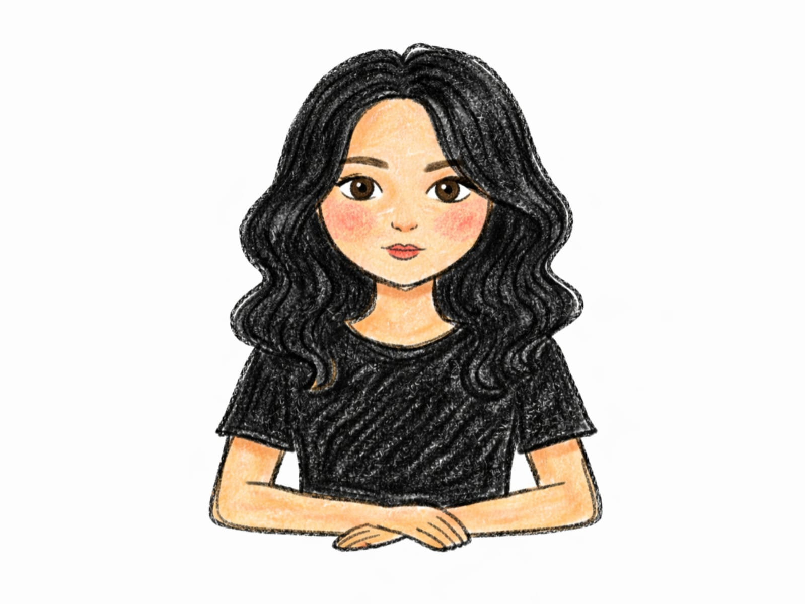
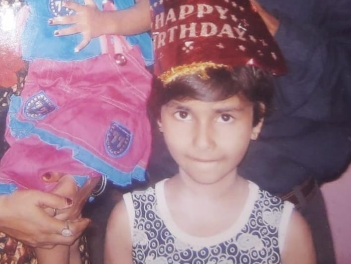

I want a future where we both wake up tired
from working hard, but never tired of each other,
where you build the thing only you can build,
and I'm right there beside you,
cheering the loudest, believing the most,
because loving you never feels like a responsibility,
it simply feels right.
I want a house that becomes a home
only because you touched it,
the walls the color you pick,
the corners filled with things you love,
and me, just happy to carry it all in
and watch it slowly become us.
I want to see the world with you,
to try food we can't pronounce,
get lost in places we've never heard of,
laugh when nothing goes according to plan,
and somewhere between all the chaos,
pause for a moment
just to watch you being happy.
And that moment would be enough for me.
I want us to give back whenever we can,
to orphanages, old age homes,
to every stray still waiting for a name.
Because you have a way of caring
for the things most people overlook,
and I hope that, by loving you,
I learn to see the world a little more like you do.
I want your family to always feel like mine,
your mother, Anna, Arth,
the comfort we've already found in one another,
the laughter we share now,
never fading, only growing louder with time.
I want a house that's never quiet,
kids we make, kids we choose,
pets who only ever know they're loved,
a home overflowing with happy chaos,
where even the messiest days remind us
that we've built something worth coming home to.
I want our kids to be kind like you,
to notice, to care, to stop for things others don't,
and whatever dreams they choose to follow,
I want them to grow up knowing
they never have to carry them alone.
And through all of it,
the home, the world, the beautiful chaos,
I just want to keep knowing you.
Not only the person I've already fallen for,
but every version you'll grow into,
so I never stop learning
how to love you a little better.
Because love isn't something I found once and kept,
it's something I choose, again and again.
On quiet mornings and difficult nights,
on the easy days and the ones that test us,
even when love is quieter than usual.
I will choose you when it's simple.
I will choose you when it's not.
I will choose you until loving you is no longer a decision I make,
but simply the way I exist.
You are my today, my tomorrow,
and every place I'll ever call home.
